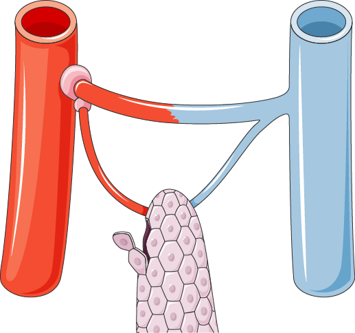
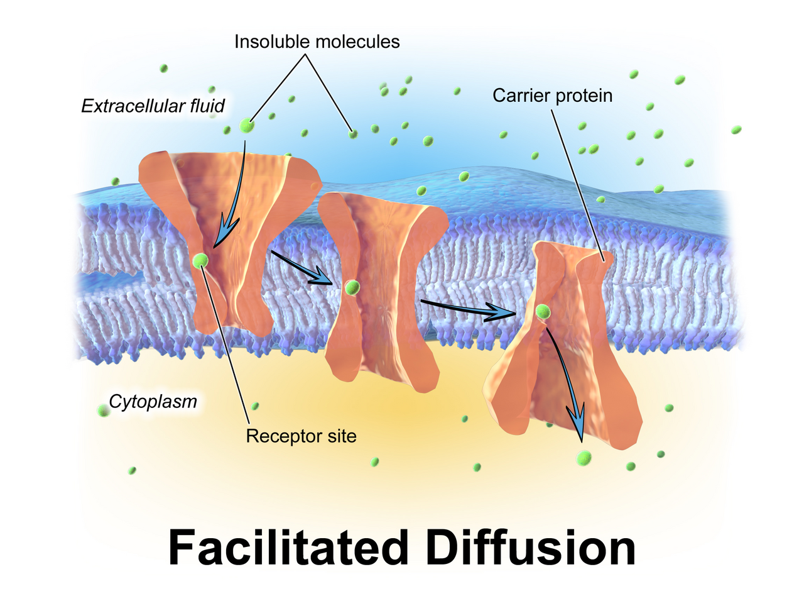
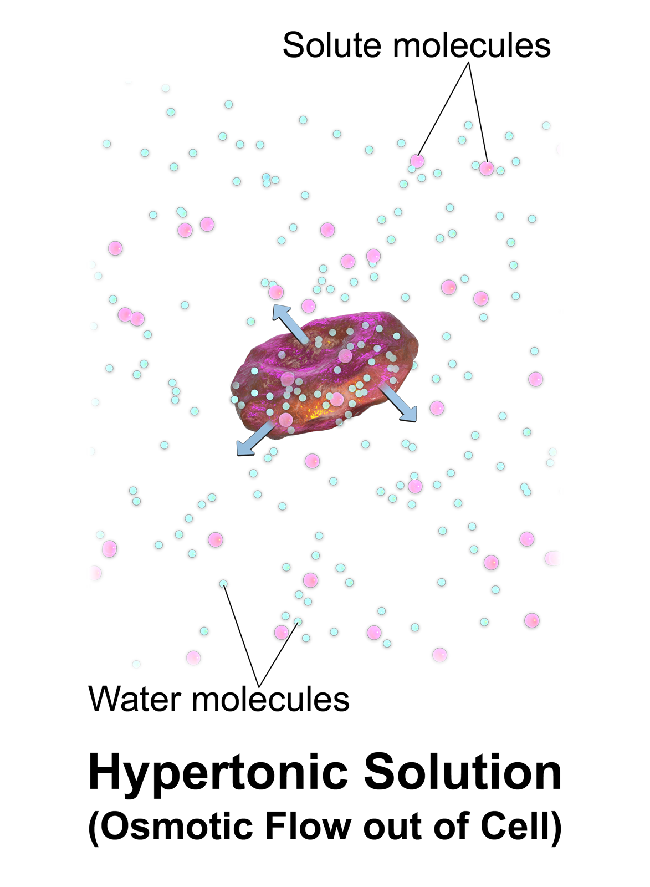
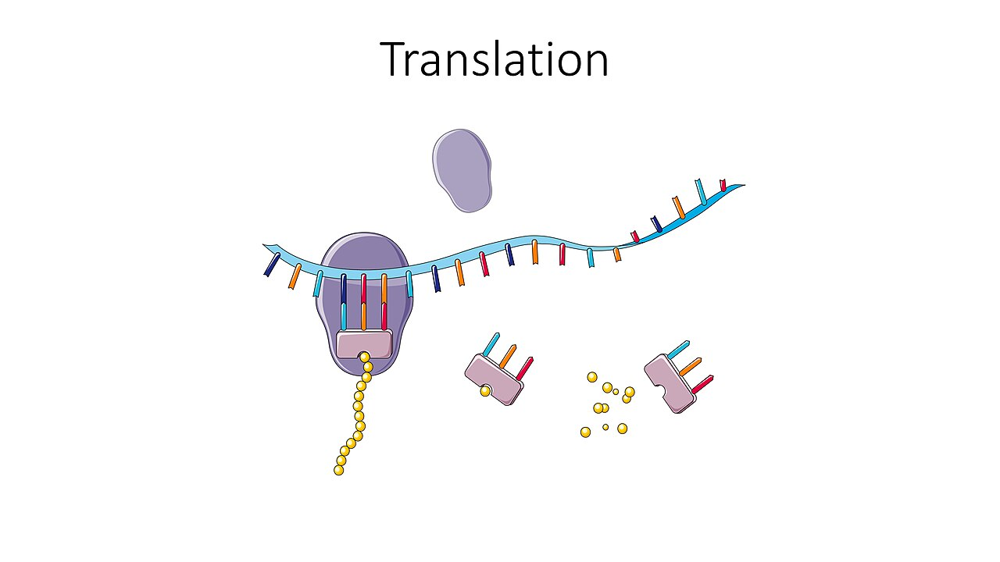
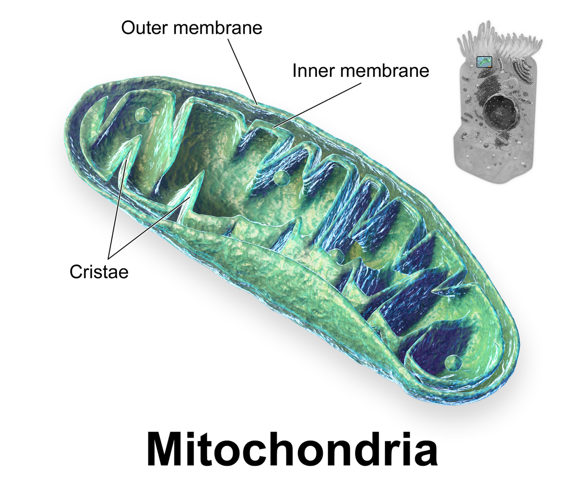

THE CELLULAR LEVEL OF ORGANIZATION
A cell is not just a bag of chemicals. It is a machine. It spends energy to hold itself away from equilibrium. Every process you study for the rest of this course is a controlled release of a gradient the cell built ahead of time. A nerve fires. A kidney takes sodium back. A muscle shortens. A gland lets go of its product. All four are the same trick. In this module you learn how the plasma membrane works as a barrier that lets only some things through. It has a resistance and a capacitance, like a small electrical part. You learn how water moves by osmosis while solutes move by diffusion, by carrier and by pump. You learn how the Na+/K+ ATPase spends roughly a quarter of your resting calories. That pump holds potassium inside the cell near 140 mM and sodium inside near 12 mM. You then follow information from DNA through transcription and translation to protein. You watch the organelles finish and ship that protein. You see how checkpoints police the cell cycle. When those checkpoints fail, that is cancer. Mechanism comes first here. Structure shows up only where structure explains behavior.
By the end of this module you can
- Explain why the phospholipid bilayer lets gases and lipids through easily but almost blocks ions. Link that to membrane resistance and capacitance.
- Tell apart simple diffusion, facilitated diffusion, primary active transport and secondary active transport. Use three things: driving force, saturability and energy source.
- Use Fick’s law to predict flux across a membrane. Show how surface area, thickness, gradient and lipid solubility change the rate.
- Work out osmolarity and tonicity. Say what each one means. Predict cell volume in hypotonic, isotonic and hypertonic solutions.
- Describe how the Na+/K+ ATPase builds the ion gradients. Those gradients power the resting membrane potential and secondary transport.
- Trace information through the central dogma. It runs from DNA through transcription, RNA processing and translation to a working protein.
- Map the secretory pathway. It runs through rough ER, Golgi apparatus and vesicle. Say what mitochondria, lysosomes and peroxisomes add.
- Draw the cell cycle with its checkpoints. Explain how apoptosis and runaway growth are two ends of one control loop.
- Find the variable, sensor, integrator and effector in at least one cellular negative feedback loop. Cell volume control is a good one.
Section 1The Plasma Membrane as a Selective Barrier

Why a bilayer forms and what that costs a solute
A phospholipid has two ends. The phosphate head hydrogen-bonds happily with water. The two fatty-acid tails cannot. Drop enough of them into water and they line themselves up. They form a sheet two molecules thick. Tails point inward. Heads point outward. Nobody builds this sheet. It is simply the lowest-energy way those molecules can sit. That is also why the membrane seals itself again after a fine glass needle punctures it. What you end up with is a hydrophobic core about 3 nm thick. Hydrophobic means water-repelling. That oily core sits between two watery spaces.
That oily core is the whole story of membrane permeability. To cross it, a molecule has to leave water. Then it has to dissolve in lipid. Then it has to enter water again on the far side. Small non-polar molecules do this easily. Oxygen, carbon dioxide, nitrogen, steroid hormones and the anesthetic gases all cross. Only their gradients limit how fast. Water is polar, but it is small. It trickles across slowly on its own. It moves fast where aquaporins, water channels, are present. Ions do not cross at all in any way that matters to the body. A sodium ion in water wears a shell of water molecules lined up around it. Stripping that shell off to enter lipid costs enormous energy. So the bare bilayer barely lets Na+ through. Its permeability runs on the order of 10−14 cm/s. That is lower than its permeability to oxygen by something like 1014 to 1016 fold. It also sits roughly 1011 times below the bilayer’s permeability to water.
This is why a cell can control what crosses its membrane. The lipid does the shutting out. The proteins do the letting in. Roughly half the mass of a typical plasma membrane is protein. Which channels, which carriers, which pumps, which receptors — that list is what makes one cell act differently from another. A neuron and a hepatocyte, a liver cell, are built on the same lipid. Their proteins are what set them apart.
Fluidity, cholesterol and the membrane as an electrical device
The bilayer is a flat, two-dimensional fluid. Single phospholipids slide sideways within their own layer. They travel several micrometers per second. So a protein can drift to a new spot. Receptors can gather where a signal arrives. Flipping from one layer to the other is a different story. It costs a lot of energy and needs enzymes called flippases. That is why the cell keeps phosphatidylserine on the inner layer. When it shows up on the outer layer, it is a reliable “eat me” flag for apoptosis.
Cholesterol makes up 20–25% of plasma-membrane lipid. It works as a fluidity buffer. At body temperature it wedges between phospholipids and slows their motion. That stiffens the membrane. In the cold it does the opposite. It keeps the lipids from packing tight, so the membrane does not turn to gel. Unsaturated fatty-acid tails have kinks in them. They fight gelling the same way. The target is a middle ground. The membrane has to be fluid enough for proteins to move. It has to stay ordered enough to work as a barrier.
The membrane is also an electrical part. That matters a great deal in Modules 5 and 6. Put a thin insulator between two salt solutions that conduct. You have built a capacitor, a device that stores charge. Membrane capacitance is close to 1 microfarad per square centimeter. That holds in nearly every cell ever studied. It is that steady because bilayer thickness barely varies. The channels alongside it supply conductance, the ease with which charge flows. Together they set a membrane time constant, tau = R × C. It runs roughly 1–20 ms. That is the time the voltage needs to travel 63% of the way to its new value after a step of injected current. That one number explains much of why action potentials rise and spread as fast as they do.
The lipid bilayer keeps ions out and lets fat-soluble molecules through. So the proteins embedded in it, not the lipid, decide what any one cell can move and how fast.
Section 2Transport Across the Membrane: Gradients, Carriers and Pumps

Passive movement and Fick’s law
Diffusion is not a force. It is what random, heat-driven motion adds up to. Put more particles on one side than the other. More of them wander left to right than right to left. Net movement keeps going until the two sides even out. At equilibrium the molecules still move. Only the net flux is zero. Diffusion is fast across the width of a cell. A small solute crosses 10 micrometers in about 50 milliseconds. But the time needed rises with the square of the distance. Crossing 1 cm by diffusion alone would take hours. That one scaling rule is why you have a circulation, an airway tree and villi.
Fick’s law gives the rate of diffusion across a membrane. You should be able to write it and read it: J = (D × A × ΔC) / T. J is flux, the amount that moves. D is the diffusion coefficient of the solute in the membrane. A is the surface area available. ΔC is the concentration difference. T is the thickness of the barrier. Every clinical use in this course is one term in that equation. Emphysema destroys alveolar walls, so A falls. Pulmonary edema thickens the barrier, so T rises. Going up to altitude lowers alveolar oxygen pressure, so ΔC falls. Anemia is the exception worth learning. It lowers oxygen content without lowering the pressure gradient. So it is not a Fick term at all. Microvilli on an enterocyte, a gut lining cell, multiply A by roughly 20-fold. That is how the whole small intestine reaches about 200 square meters of absorbing surface.
Facilitated diffusion is still passive. It still runs down the gradient and still uses no ATP. The difference is that the solute rides on a protein. Channels are water-filled pores with a high throughput, up to 108 ions per second. They can be gated by voltage, by a ligand, or by mechanical stretch. Carriers work another way. A carrier binds the solute, changes shape, and lets it go on the other side. Carriers move perhaps 102–104 molecules per second. A carrier has only so many binding sites. So carrier transport shows saturation (a transport maximum, or Tm), specificity and competition. Simple diffusion shows none of those. Its rate simply climbs in a straight line with the gradient. That contrast is the cleanest way to tell the two apart. It also explains glucosuria, glucose in the urine. SGLT carriers reabsorb filtered glucose until plasma glucose passes roughly 180–200 mg/dL. Past that point Tm is exceeded and glucose spills into the urine.
Primary and secondary active transport
Primary active transport moves a solute against its electrochemical gradient. The transporter itself splits ATP to pay for the trip. The classic example is the Na+/K+ ATPase, and every animal cell has one. It sends 3 Na+ out and brings 2 K+ in per ATP. Those two numbers do not match, so the pump moves net charge. That makes it electrogenic and adds a few millivolts of negativity on its own. Its far larger job is holding the gradients themselves. These values are worth memorizing. Sodium inside the cell runs about 10–15 mM against 140 mM outside. Potassium inside runs about 140–150 mM against 3.5–5.0 mM outside. Holding that costs on the order of 20–30% of basal metabolic rate. It costs a good deal more in tissues such as the kidney and brain. Cardiac glycosides such as digoxin block this pump. That is clean proof the pump is the source of the gradient, not just a passenger. Other primary pumps exist. One is the sarcoplasmic/endoplasmic reticulum Ca2+ ATPase (SERCA). Another is the plasma-membrane Ca2+ ATPase. Another is the H+/K+ ATPase of the gastric parietal cell, the pump that proton-pump inhibitors block.
Secondary active transport is the elegant trick. The cell has already spent ATP to build a steep sodium gradient pointing inward. A cotransporter now lets sodium fall down that gradient. It uses the released energy to drag a second solute uphill. When both move the same direction, the carrier is a symporter. SGLT1 in the intestine hauls glucose in along with sodium. The sodium-linked amino-acid carriers do the same for protein digestion products. When the two move opposite directions, the carrier is an antiporter. The Na+/H+ exchanger pushes acid out. The Na+/Ca2+ exchanger clears calcium from cardiac myocytes, the muscle cells of the heart. No ATP touches these carriers directly. Yet they weaken and then fail if you poison the Na+/K+ ATPase. The gradient they live off runs down. So ask two questions about any transporter. What is the driving force? Who paid for it?
Some particles are too large for any carrier. For those the membrane moves in bulk. Endocytosis folds inward and pinches off a vesicle, a small membrane bubble. Phagocytosis takes in particles and bacteria. Pinocytosis takes in extracellular fluid, the fluid around cells. Receptor-mediated endocytosis takes in one named cargo. LDL bound to its receptor in a clathrin-coated pit is the classic case. Familial hypercholesterolemia is a fault in that receptor. Plasma LDL runs high because the uptake step fails. The body is not making too much. Exocytosis runs the process backwards. It is how neurotransmitters, hormones and digestive enzymes leave the cell. A rise in cytosolic Ca2+ usually sets it off.
| Mechanism | Driving force | Uses ATP? | Saturable / specific? | Example |
|---|---|---|---|---|
| Simple diffusion | Concentration gradient | No | No | O2, CO2, steroid hormones |
| Channel-mediated | Electrochemical gradient | No | Picky, but does not saturate | Voltage-gated Na+, aquaporin water |
| Carrier-mediated facilitated | Concentration gradient | No | Yes — it has a Tm | GLUT4 glucose uptake into muscle |
| Primary active | ATP split at the pump | Yes, directly | Yes | Na+/K+ ATPase, SERCA, H+/K+ ATPase |
| Secondary active (symport) | Na+ gradient, same direction | Indirectly | Yes | SGLT1 glucose absorption |
| Secondary active (antiport) | Na+ gradient, opposite direction | Indirectly | Yes | Na+/H+ exchanger, Na+/Ca2+ exchanger |
| Vesicular | Cell skeleton work, Ca2+ trigger | Yes | Yes — it picks its receptor | LDL uptake, neurotransmitter release |
Every transport process either falls down a gradient or spends energy to climb one. Secondary active transport climbs on energy the Na+/K+ ATPase already paid for.
Section 3Water, Osmosis and Cell Volume Control

Osmolarity, osmotic pressure and why water always moves passively
Osmosis is the diffusion of water across a membrane that lets only some things through. Water moves from where it is more concentrated to where it is less concentrated. More concentrated water means dilute solute. Less concentrated water means packed solute. There is no water pump anywhere in the human body. Water always moves passively. It follows an osmotic gradient or a hydrostatic pressure gradient. When the kidney “reabsorbs water”, it is really reabsorbing solute. The water just follows.
Osmolarity counts dissolved particles per liter of solution. The unit is osmoles per liter. It does not care what the particles are. One mole of glucose gives 1 osmole. One mole of NaCl splits apart and gives close to 2 osmoles. One mole of CaCl2 gives close to 3. Normal plasma osmolarity is held tight at about 275–295 mOsm/L. A handy bedside estimate is this: calculated osmolarity = 2 × [Na+] + glucose/18 + BUN/2.8 in conventional US units. Sometimes the measured value sits well above the calculated one. That difference is an osmolar gap. It means particles are there that nobody measured. Methanol and ethylene glycol are the classic ones.
Osmotic pressure is the pressure you would have to apply to stop water moving by osmosis. It is large. Van’t Hoff’s relation, π = n × C × R × T, gives roughly 19 mmHg per mOsm/L. So plasma at 290 mOsm/L pulls very hard against pure water. The number that matters in the body is usually not that total, though. It is the small share that comes from plasma proteins that cannot cross a capillary wall. That share is colloid osmotic (oncotic) pressure, about 25–28 mmHg, mostly albumin. Module 9 uses it directly in the Starling equation. For now, note one thing. A solute pulls water across a membrane only if the membrane cannot let it through.
Tonicity is not osmolarity, and cells report the difference
That last sentence is the whole difference between osmolarity and tonicity. Osmolarity counts every particle. Tonicity counts only the effective osmoles. Those are the ones the membrane keeps out. They are the ones that really pull water. Urea crosses cell membranes freely. It evens out across them and pulls no lasting water. So a 300 mOsm/L urea solution is isosmotic with plasma. But it acts hypotonic. Red cells placed in it swell and lyse, which means they burst. Sodium and mannitol are shut out of cells. They are effective osmoles. They behave exactly as their osmolarity predicts.
Place a red cell in a hypotonic solution and water enters. The cell swells. Past about a 1.4-fold rise in volume it bursts. In a hypertonic solution water leaves and the cell shrivels, or crenates. In an isotonic solution the volume holds steady. Isotonic here means 0.9% NaCl at about 308 mOsm/L, or 5% dextrose in water at about 278 mOsm/L at the moment you infuse it. D5W is the trap worth learning now. It is isotonic in the bag. But the body burns the dextrose within minutes. What is left is free water, and it spreads through every body compartment. Infuse enough of it fast enough and you can cause a real hypotonic injury with a fluid labeled isotonic.
Cells do not sit still while their volume changes. They defend it. Here is this module’s clearest negative feedback loop. The variable is cell volume. The sensor is a set of stretch-activated channels and volume-sensitive membrane proteins. They notice swelling. The integrator is a network of volume-sensitive kinases in the cytosol. The WNK/SPAK family is part of it. The effectors are potassium and chloride channels plus the KCC cotransporter. The response to swelling is a regulatory volume decrease. The cell pushes out K+, Cl- and organic osmolytes such as taurine and myo-inositol. Osmolarity inside falls. Water follows it out. Volume returns toward set point. Shrinking triggers the mirror image. That is a regulatory volume increase, run by the NKCC1 cotransporter and Na+/H+ exchange. Look at the shape of it. The fix opposes the change. That is the definition of negative feedback. You will meet the same pattern in every module left.
Water never moves on its own. It follows effective osmoles. So tonicity, not total osmolarity, predicts what a cell will do.
Section 4From Gene to Protein: How the Cell Builds Its Machinery

Storage, transcription and the point of processing
Roughly two meters of DNA fit inside a nucleus about 6 micrometers across. It fits because DNA winds around histone octamers into nucleosomes. Those coil further into chromatin. That packing is not only storage. It is control. Tightly packed heterochromatin is silent. Nothing is copied from it. Loosely packed euchromatin is open for business. Adding acetyl groups to histone tails loosens the wrapping. That invites transcription. Adding methyl groups to promoter DNA usually silences it. Two cells with the same genes can become a neuron and a hepatocyte. Different regions are open in each one. They do not carry different genes.
Transcription copies one gene into RNA. RNA polymerase II binds a promoter and unwinds a short stretch. It reads the template strand 3′ to 5′ while building RNA 5′ to 3′. It puts uracil where thymine was, and ribose where deoxyribose was. The product is pre-mRNA, and the cell then processes it. A 5′ cap goes on. A poly-A tail of 100–250 adenines goes on. The spliceosome cuts out the introns and joins the exons. Alternative splicing lets one gene yield several proteins. Roughly 20,000 human genes support well over 100,000 different proteins. That is why counting genes is a poor measure of complexity.
Only mature mRNA leaves through a nuclear pore. Every part of this design serves control. The nucleus keeps transcription and translation apart in time and space. So the cell can edit the message, block it, or tune it before any protein is built. Prokaryotes have no nucleus and cannot do this. Many antibiotics work by exploiting exactly those differences.
Translation, the genetic code and mutation
In the cytosol the small ribosomal subunit binds the mRNA. It scans along to the start codon, AUG. The genetic code reads in triplets that do not overlap. There are 64 codons for 20 amino acids plus a stop. So the code is degenerate. Most amino acids have more than one codon, and those codons usually differ in the third base. Transfer RNAs do the delivery. Each one carries a specific amino acid and a matching anticodon. Peptidyl transferase joins the amino acids with peptide bonds. Elongation runs at roughly 2–6 amino acids per second in human cells. A 300-residue protein takes roughly one to two minutes. A stop codon (UAA, UAG, UGA) brings in release factors and the chain lets go. Several ribosomes read one mRNA at the same time as a polyribosome. That multiplies the output.
Degeneracy explains why not every DNA change matters. A silent point mutation changes the third base. It still codes for the same amino acid. A missense mutation swaps one amino acid for another. A single GAG→GTG in the beta-globin gene puts valine where glutamate belongs. That produces sickle cell disease. One base changes how well deoxygenated hemoglobin dissolves. That one change drives the whole clinical picture. A nonsense mutation makes an early stop. It cuts the protein short. An insertion or deletion that is not a multiple of three shifts the reading frame. Everything after it comes out garbled. That is usually catastrophic. Sequence sets the folding. Folding sets the shape. Shape sets the function. That chain is why a physiologist cares about molecular genetics at all.
Folding itself gets help. Chaperone proteins keep water-repelling regions from clumping. They do that while the chain is still coming off the ribosome. Misfolded proteins get tagged with ubiquitin. The proteasome then destroys them. When that quality control fails on a large scale, you get disease. Look at cystic fibrosis. The common ΔF508 mutation makes a CFTR chloride channel that would work if it reached the membrane. It misfolds and is destroyed before it gets there. The defect is trafficking, not catalysis. That is exactly why corrector drugs that rescue folding help.
The nucleotide sequence sets the amino acid sequence. That sets the fold. The fold sets the function. So a single base change can rewrite a whole physiology.
Section 5Organelles, Energy and the Cell Cycle

Compartmentation and the secretory pathway
A eukaryotic cell has organelles because chemistries that clash need separate rooms. Take the lysosomal hydrolases, the enzymes that digest waste. They work best near pH 4.8. The cytosol at pH 7.2 would never allow that. The lysosomal membrane and its V-type proton pump build that acid interior. Oxidative phosphorylation needs a proton gradient. A gradient needs a membrane tight enough to hold it. That is just what the inner mitochondrial membrane gives. Compartments are not about being tidy. They are a requirement of the job.
Follow a protein that will be secreted. Translation starts on a free ribosome. Then a signal sequence at the N-terminus steers the whole ribosome to the rough endoplasmic reticulum. The chain is fed into the ER lumen as it is built. There it folds. It gains disulfide bonds and its first sugars. Transport vesicles carry it to the Golgi apparatus. The Golgi is a sorting and finishing plant. Sugars are trimmed and refined. Proteins are sorted by their destination tag. Vesicles bud from the trans face. Each one is labeled for the plasma membrane, for secretion, or for a lysosome. Smooth ER has no ribosomes and does other work. It builds lipids and steroids, so it is plentiful in the adrenal cortex and gonads. It detoxifies drugs using cytochrome P450, so it is plentiful in hepatocytes. It also stores calcium. In muscle a specialized smooth ER becomes the sarcoplasmic reticulum. Its Ca2+ release triggers contraction. You meet that mechanism in Module 5.
Mitochondria supply the ATP that pays for all of it. Glycolysis in the cytosol yields a net 2 ATP per glucose. The citric acid cycle in the matrix raises that. So does oxidative phosphorylation along the inner membrane. Together they bring the total to roughly 30–32 ATP. The mechanism is chemiosmotic. Electrons pass down the respiratory chain. That pumps protons into the intermembrane space. The protons build an electrochemical gradient. ATP synthase then lets them fall back through. It uses that fall to add phosphate to ADP. It is the same idea as secondary active transport. A gradient is built with energy, then spent to do work. Cells with high energy demand carry more mitochondria. A cardiac myocyte gives about 30–40% of its volume to them. A skin cell gives far less. Mitochondria also carry their own circular DNA. You inherit it from your mother. That is why mitochondrial disease follows a maternal pattern. It also hits high-energy tissues first: brain, muscle and heart.
The cell cycle, checkpoints and programd death
Most of a cell’s life is interphase. G1 is for growth and normal work. S phase copies the DNA and takes about 6–8 hours in a typical human cell. G2 is the final preparation. Mitosis then separates the doubled chromosomes. Its stages are prophase, metaphase, anaphase and telophase. Cytokinesis divides the cytoplasm. Mitosis itself takes only about an hour of a 24-hour cycle. Some cells will never divide again. Neurons and cardiac myocytes step out of the cycle into G0. That exit is why a myocardial infarction leaves scar rather than new muscle.
Checkpoints police the cycle, and cyclins and cyclin-dependent kinases drive them. The G1 checkpoint asks whether the cell is large enough. It asks whether nutrients and growth signals are present, and whether the DNA is undamaged. The G2 checkpoint confirms that replication finished correctly. The M checkpoint confirms that every chromosome is attached to the spindle before anaphase begins. p53 is the central guard at G1. It halts the cycle for repair. If the damage is beyond repair, it orders the cell to die. p53 is mutated in over half of human cancers. That tells you the checkpoint is doing real work when it is intact.
Apoptosis is programmed cell death. It is an orderly caspase cascade, and it costs ATP. The cell shrinks. Its DNA is chopped up. Phosphatidylserine flips to the outer leaflet. The remains are packed into blebs that phagocytes clear without inflammation. This is essential, not a disease. It carves away the webbing between fetal fingers. It removes lymphocytes that attack the self. It kills virus-infected cells. Compare it with necrosis, the uncontrolled death that follows ischemia or trauma. There the cell swells, ruptures, spills its contents and stirs up inflammation. Cancer is best understood as this whole control system failing in both directions at once. Growth signals stay switched on. Checkpoints are disabled. Apoptosis is suppressed. The cell cycle is itself a feedback-regulated system. Cancer is what happens when the loop is cut.
Organelles exist so reactions that clash can run at once. Checkpoints exist so a cell divides only when it should. Both are control systems. Both fail in ways you can recognize as disease.
The module in one breath
A cell earns its living by holding gradients. The phospholipid bilayer supplies the barrier. Gases and lipid-soluble molecules pass through it freely. Ions essentially do not. The proteins in it decide what crosses. Transport comes in two kinds. Passive transport falls down an electrochemical gradient. It uses simple or facilitated diffusion. Fick’s law predicts its rate from area, gradient and thickness. Active transport climbs a gradient instead. It can spend ATP directly. That is what the Na+/K+ ATPase does to hold K+ inside near 140 mM and Na+ inside near 12 mM. Or it can spend that stored sodium gradient through symporters and antiporters. Water never pumps. It follows effective osmoles. So tonicity, not raw osmolarity, predicts whether a cell swells or shrinks. Cells defend their volume with a real negative feedback loop. Stretch sensors, volume-sensitive kinases and osmolyte channels run it. Meanwhile the nucleus stores the instructions. Transcription and splicing make a working copy the cell can edit. Ribosomes translate it. The ER, Golgi and vesicle pathway finishes the product and ships it. Mitochondria pay for all of it with a proton gradient of their own. Checkpoints decide when a cell may divide. Apoptosis decides when it must stop. Every mechanism in the next twelve modules is one of these jobs, scaled up to an organ.
Words worth knowing
| Term | What it means |
|---|---|
| Phospholipid bilayer | A sheet of lipids two molecules thick. Its oily, water-repelling core faces inward. It is the basic membrane barrier and it blocks ion movement. |
| Fluid mosaic model | The idea that the membrane is a two-dimensional fluid. Proteins drift sideways in a sea of lipid. |
| Membrane capacitance | The membrane’s ability to store charge. It is close to 1 microfarad per square centimeter. With resistance it sets the time constant tau = R × C. |
| Simple diffusion | Passive movement of a solute straight through the bilayer, down its gradient. No protein is involved, and it is neither saturable nor picky. |
| Facilitated diffusion | Passive movement down a gradient on a protein. That protein is a channel or a carrier. Carrier forms are saturable and picky. |
| Fick’s law | J = (D × A × ΔC) / T. Flux rises with the diffusion coefficient, the surface area and the gradient. It falls as the barrier gets thicker. |
| Primary active transport | Movement against an electrochemical gradient. The transporter itself splits ATP to pay for it, as the Na+/K+ ATPase does. |
| Secondary active transport | One solute is dragged uphill by another falling downhill. That other one is usually sodium. Symport moves both the same way. Antiport moves them opposite ways. |
| Transport maximum (Tm) | The saturation ceiling of a carrier system, reached when every binding site is full. It is the reason glucose spills into urine above roughly 180–200 mg/dL. |
| Osmolarity | Total dissolved particles per liter of solution. Normal plasma runs about 275–295 mOsm/L. |
| Tonicity | What a solution does to cell volume. Only effective osmoles, the ones that cannot cross, decide it. That is why isosmotic urea is still hypotonic. |
| Oncotic pressure | The colloid osmotic pressure from plasma proteins that cannot cross. It runs about 25–28 mmHg and is mostly albumin. |
| Negative feedback | A control setup. A sensed change drives a response that opposes it. The variable returns toward set point. |
| Transcription | RNA polymerase builds RNA from a DNA template. It happens in the nucleus, and capping, polyadenylation and splicing follow. |
| Translation | The ribosome builds a polypeptide from mRNA codons using charged tRNAs. It runs at roughly 2–6 amino acids per second. |
| Degenerate code | A feature of the genetic code. Several codons can specify the same amino acid. That is what allows silent mutations. |
| Secretory pathway | The route of an exported protein. Rough ER builds and folds it. Golgi finishes and sorts it. A vesicle delivers it or releases it by exocytosis. |
| Chemiosmosis | The mitochondrial mechanism. The respiratory chain pumps protons and builds a gradient. ATP synthase then spends that gradient to phosphorylate ADP. |
| Cell-cycle checkpoint | A regulatory gate (G1, G2, M) that halts progress until conditions are met. p53 guards the G1 gate. |
| Apoptosis | Active, ATP-requiring, caspase-driven programmed cell death. It leaves no inflammation. Necrosis does. |